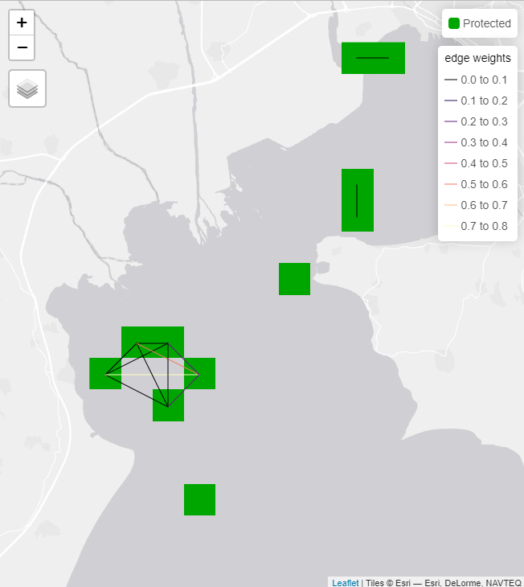

Introduction to priorCON
Christos Adam, Nikolaos Nagkoulis, Aggeliki Doxa, Antonios D. Mazaris, Stelios Katsanevakis
Source:vignettes/Introduction.Rmd
Introduction.RmdThis research was conducted at the Department of Marine Sciences, University of the Aegean, Greece, supported by the European Union’s Horizon 2020 research and innovation programme HORIZON-CL6–2021-BIODIV-01–12, under grant agreement No 101059407, “MarinePlan – Improved transdisciplinary science for effective ecosystem-based maritime spatial planning and conservation in European Seasâ€.
Introduction to the priorCON Package (tutorial)
The priorCON package offers an innovative tool-set that incorporates graph community detection methods into systematic conservation planning. This package is designed to enhance spatial prioritization by focusing on the protection of areas with high ecological connectivity. Unlike traditional approaches that prioritize individual planning units, priorCON focuses on clusters of features that exhibit strong ecological linkages. The priorCON package is built upon the prioritizr package (Hanson et al., 2024; 2025), using commercial and open-source exact algorithm solvers that ensure optimal solutions to prioritization problems.
Features of priorCON
Graph Community Detection: The package utilizes connectivity metrics to identify clusters of habitat patches with high connectivity values.
Spatial prioritization: The package uses the connectivity metrics as inputs in prioritizr to identify areas with high connectivity.
Connectivity Estimation: The package estimates the connectivity protection level by calculating the protected connections.
Post-processing: The package can be used to produce and download the outputs of the analysis as shapefiles, matrices and tmap plots.
This workflow is shown on Fig. 1.

Fig. 1: Flow chart of the priorCON prioritization analysis. priorCON functions are indicated in grey boxes
This tutorial will guide you through the key functions of the package, from data preparation to generating informative outputs to address conservation connectivity challenges in diverse ecosystems.
Workflow: Running the analysis
The package provides 4 steps to perform the analysis:
Preprocessing (Optional): Function
preprocess_graphs()is built in order to create edge lists from various inputs formats.Connectivity metrics estimation: Function
get_metrics()is built to calculate the following graph metrics: degree, eigenvector centrality, betweenness centrality, louvain clustering, walktrap clustering, s-core, PageRank.Prioritization: Functions
basic_scenario()andconnectivity_scenario()are used to insert the data to prioritizr run the prioritization problem and obtain the optimum solutions.Post-processing: Function
get_outputs()is used in order to plot interactive maps and export tables, shapefiles and rasters of the results
The functions of steps 1 and 2 can be used within the spatial conservation planning workflow as described here but also independently to create and obtain the graph metrics that might be also useful within other research contexts. In the next sections we provide an illustrative example to explain in more detail how the functions operate.
Installation
All the functions of the package can be installed from CRAN in R via
install.packages("priorCON")Alternatively, the package priorCON can be installed at the development version from Github in R via
if (!require(remotes)) install.packages("remotes")
remotes::install_github("cadam00/priorCON")Illustration example
Let us consider the following dataset as an illustrative example. The area examined is Thermaikos gulf in Greece. In this example, a Lagrangian model has been run to the area, to estimate connectivity. This connectivity will be incorporated into the analysis to obtain the areas that need to be protected to maximize the connectivity protection. Preprocessing is necessary in this case in order to transform the Lagrangian data in an edge list.
Step 1 Preprocessing (Optional):
The input of an edge list is required in most graph theoretic
approaches. Fig. 2 represents a typical
directed weighted graph. In the edge list, the first two columns utilize
the nodes IDs to represent edges and the last column corresponds to the
value of the edges. This value actually represents the connectivity
value between the corresponding nodes and may represent for instance
values resulting from particle drift models, migration probabilities or
other. This preprocessing step can be conducted using the function
preprocess_graphs() and serves in reading and transforming
the initial input data into an edge list. Further details on the initial
data formats are given below. In case that an edge list is available,
this step can be skipped.

Fig. 2: Weighted directed graph (left): Circles represent nodes and arrows represent weighted edges. The tabular representation of the graph represents the edge list (right).
Function preprocess_graphs() takes as input a list of
.txt/.csv objects. Each object represents the connections between a node
and all the other nodes. For the model to read the data, it is necessary
to have all the .txt/.csv objects in one folder. There are two ways to
incorporate connectivity data, based on their linkage to features:
Case 1: the connectivity data correspond to specific biodiversity features. If a biodiversity feature has its own connectivity dataset then the file including the edge lists needs to have the same name as the corresponding feature. For example, consider having 5 species (f1, f2, f3, f4, f5) and 5 connectivity datasets. Then the connectivity datasets need to be in separate folders named: f1,f2,f3,f4,f5 and the algorithm will understand that they correspond to the species.
Case 2: the connectivity dataset represents a spatial pattern that is not directly connected with a specific biodiversity feature. Then the connectivity data need to be included in a separate folder named in a different way than the species. For example consider having 5 species (f1,f2,f3,f4,f5) and 1 connectivity dataset. This dataset can be included in a separate folder (e.g. “Langragian_conâ€).
In our example we use connectivity values that are not directly connected with a specific species, therefore we illustrate Case 2. Fig. 3 represents the structure used in the tutorial. The data need to be stored in this way in order for the algorithm to read them properly.

Fig. 3: Connectivity folder
A typical Lagrangian output is a set of files representing the likelihood of a point moving from an origin (source) to a destination (target). This can be represented using a list of .txt files (as many as the origin points) including information for the destination probability. The .txt files need to be named in an increasing order. The name of the files need to correspond to the numbering of the points, in order for the algorithm to match the coordinates with the points (Fig. 4).

Fig. 4: The 001.txt file contains the following information: Each row represents the probability of movement between point 001 and any other destination points.
As long as the data are set in this way, the preprocessing algorithm can run and transform the format of the inputs to an edge list. If an edge list dataset is available, this preprocessing step can be skipped.
## terra 1.8.54
# Read connectivity files from folder and combine them
combined_edge_list <- preprocess_graphs(
system.file("external",package="priorCON"),
header = FALSE, sep =";"
)Step 2 Connectivity Metrics Estimation:
Function get_metrics() is used to calculate graph
metrics values. The edge lists created from the previous step, or
inserted directly from the user are used in this step to create graphs.
The directed graphs are transformed to undirected. The function is based
on the igraph package (Csárdi and Nepusz, 2006; Csárdi et al., 2024) which is used to create
clusters using Louvain and Walktrap and calculate the following metrics:
Eigenvector Centrality, Betweenness Centrality, Degree and PageRank.
S-core is calculated using the package brainGraph (Watson, 2024). The user can choose between
these options to create the respective outputs. 's_core',
'louvain', 'walktrap', 'eigen',
'betw', 'deg' or 'page_rank'.
Detailed information on the theory and equations of the used graph metrics are provided in Nagkoulis et al.(2024; subm Methods in Ecology and Evolution).
# Set seed for reproducibility
set.seed(42)
# Detect graph communities using the s-core algorithm
pre_graphs <- get_metrics(combined_edge_list, which_community = "s_core")Step 3 Prioritization:
Two alternative functions can be used for the prioritization step: i)
the connectivity_scenario() function, which includes
connectivity into the optimization procedure and ii) the
basic_scenario() function, which does not include
connectivity. The two functions can be run separately. Users may use
both functions, if they wish to compare the results obtained from the
two scenarios, i.e. with and without connectivity. Alternatively, only
the connectivity_scenario() function can be run to obtain
the prioritization outputs of the connectivity scenario. Both functions
are based on the priorititizr package (Hanson et al., 2024; 2025). The connectivity metrics are first
transformed to rasters, following an approach similar to Marxan Connect
(Daigle et al., 2020).
Then priorititizr maximizes the utility obtained from
protecting both features and connections. Mathematically, the target of
the optimization is to maximize U under the budget (B) limitations (eq.
2 and 3 of Nagkoulis et al. (2024)):
A set of planning units is considered to be protected when . The protection of any results in a cost . A finite set of features is also distributed in , suggesting that these features can be spatially mapped within the PUs. Each is thus defined as a spatial object containing the following properties: , where indicates the quantity of located in . We use the annotation for the values of the metric for every feature . By inserting metrics into the analysis, each PU’s () properties are extended and can be expressed as follows: .
The first input that can be given to the algorithm is a typical cost layer representing the cost of protecting each single planning unit. This cost layer is inserted to prioritizr. If such a cost layer is not available, a cost layer with all planning units having equal cost can be inserted (Fig. 5. The algorithm needs a cost layer, in order to determine the planning units.
# Set tmap to “view†mode
tmap_mode("view")
# Read the cost raster
cost_raster <- get_cost_raster()
# Plot the cost raster with tmap
tm_shape(cost_raster) +
tm_raster(col.legend = tm_legend(title = "cost",
position = c("right", "top")))## The visual variable "col" of the layer "raster" contains a unique value. Therefore a discrete scale is applied (tm_scale_discrete).

Fig. 5: Cost raster
The second input are the features rasters. In case such rasters are not available, a raster with equal values can be given to the algorithm. In this case we have used such a pseudo-raster, adding some noise to improve the performance of the algorithm.
# Read the features raster
features <- get_features_raster()
# Plot the features raster with tmap
tm_shape(features) +
tm_raster(col.legend = tm_legend(title = "f1",
position = c("right", "top")))

Fig. 6: Features raster
# Solve an ordinary prioritizr prioritization problem
basic_solution <- basic_scenario(
cost_raster = cost_raster,
features = features,
budget_perc = 0.1
)
# Solve a prioritizr prioritization problem,
# by incorporating graph connectivity of the features
connectivity_solution <- connectivity_scenario(
cost_raster = cost_raster,
features = features,
budget_perc = 0.1,
pre_graphs = pre_graphs
)Step 4: Post-processing:
The results obtained from prioritizr are presented
using matrices and plots, allowing the user to compare the outcomes of
incorporating connectivity metrics in the analysis. Function
get_outputs() takes as input a prioritization solution. The
user can also get the outputs as shapefiles and raster to use them in
their analysis.
# Get outputs from basic_scenario function for feature “f1â€
basic_outputs <- get_outputs(solution = basic_solution,
feature = "f1",
pre_graphs = pre_graphs)
basic_outputs$tmapThe visual variable "col" of the layer "lines" contains a unique value. Therefore a discrete scale is applied (tm_scale_discrete).
Fig. 7: Basic solution with connections shown
# Print summary of features and connections held
# percentages for basic scenario
print(basic_outputs$connectivity_table)
## feature relative_held connections(%)
## 1 f1 0.178563 0
# Get outputs from connectivity_scenario function for feature “f1â€
connectivity_outputs <- get_outputs(solution = connectivity_solution,
feature = "f1",
pre_graphs = pre_graphs)
connectivity_outputs$tmap
Fig. 8: Connectivity solution with connections shown
# Print summary of features and connections held percentages
# for connectivity scenario
print(connectivity_outputs$connectivity_table)
## feature relative_held connections(%)
## 1 f1 0.1637209 0.3339886Graph Connectivity Rasters:
Accessing and working directly with the graph connectivity rasters
used as features in the connectivity_scenario function is
possible by two ways. The first way is after running
connectivity_scenario, retrieving its output elements named
original_connectivity_rast/normalized_connectivity_rast.
The second one is computing these rasters directly from
get_metrics output and a planning units SpatRaster object
(pu_raster).
# Define planning units area SpatRaster, matching the coordinates of pre_graphs
pu_raster <- get_cost_raster()
# Graph connectivity SpatRaster object. pre_graphs is calculated as before.
# It has same values with connectivity_solution$original_connectivity_rast
f1_s_core <- graph_connectivity_rasters(pu_raster, pre_graphs)
# Plot the graph connectivity SpatRaster with tmap.
tm_shape(f1_s_core) +
tm_raster(col.legend = tm_legend(title = "f1 S-core",
position = c("right", "top")))

Fig. 9: Graph connectivity
# Plot normalized graph connectivity SpatRaster with tmap in [0,1] scale.
# It has same values with connectivity_solution$normalized_connectivity_rast.
max_ <- as.numeric(global(f1_s_core, max, na.rm=TRUE))
min_ <- as.numeric(global(f1_s_core, min, na.rm=TRUE))
f1_s_core_normalized <- (f1_s_core - min_) / (max_ - min_)
tm_shape(f1_s_core_normalized) +
tm_raster(col.legend = tm_legend(title = "Normalized f1 S-core",
position = c("right", "top")))

Fig. 10: Normalized graph connectivity
References
Csárdi, Gábor, and Tamás Nepusz. 2006. “The igraph software package for complex network research.†InterJournal Complex Systems: 1695. https://igraph.org
Csárdi, Gábor, Tamás Nepusz, Vincent Traag, Szabolcs Horvát, Fabio Zanini, Daniel Noom, and Kirill Müller. 2024. igraph: Network Analysis and Visualization in R. https://doi.org/10.5281/zenodo.7682609
Daigle, Rémi M., Anna Metaxas, Arieanna C. Balbar, Jennifer McGowan, Eric A. Treml, Caitlin D. Kuempel, Hugh P. Possingham, and Maria Beger. 2020. “Operationalizing ecological connectivity in spatial conservation planning with Marxan Connect.†Methods in Ecology and Evolution 11 (4): 570–79. https://doi.org/10.1111/2041-210X.13349
Hanson, Jeffrey O, Richard Schuster, Nina Morrell, Matthew Strimas-Mackey, Brandon P M Edwards, Matthew E Watts, Peter Arcese, Joseph R Bennett, and Hugh P Possingham. 2024. prioritizr: Systematic Conservation Prioritization in R. https://CRAN.R-project.org/package=prioritizr
Hanson JO, Schuster R, Strimasâ€Mackey M, Morrell N, Edwards BPM, Arcese P, Bennett JR, and Possingham HP. 2025. Systematic conservation prioritization with the prioritizr R package. Conservation Biology, 39: e14376. https://doi.org/10.1111/cobi.14376
Watson, Christopher G. 2024. brainGraph: Graph Theory Analysis of Brain MRI Data. https://doi.org/10.32614/CRAN.package.brainGraph